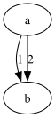
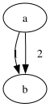

2026-06-16. digraph{a->b[label="1"]; a->b[label="2"]}.
Corpus baseline: a single wiggly path, pathΔ 23pt. After T2 routes labeled
multi-rank edges through the faithful pipeline, edge "1" now matches dot
byte-for-byte and both label texts render. The residual — edge "2"'s
straight-collapse and the label x-positions — is rooted outside this mission's
write-set and is pinned at TS's actual output (AD-4).
The drawings below are the actual rendered SVGs.


Edge "1" (bends around its label box) — exact.
| pt | dot | graphviz-ts | Δ |
|---|---|---|---|
| start | 20.13,-88.69 | 20.13,-88.69 | 0.00 |
| mid | 14.07,-63.26 | 14.07,-63.26 | 0.00 |
| end | 16.78,-46.78 | 16.78,-46.78 | 0.00 |
Edge "2" — dot straightens it to 4 points at x=27; TS routes a 10-point near-straight spline ~0.8pt right.
| dot | graphviz-ts | |
|---|---|---|
| path | M27,-88.41 C27,-76.76 27,-61.05 27,-47.52 | M27.45,-88.05 C27.57,-82.45 … 27.66,-47.69 (10 pts) |
Label centres.
| label | dot x | ts x | Δ |
|---|---|---|---|
| "1" | 18.62 | 15.38 | 3.24 |
| "2" | 30.38 | 45.38 | 15.00 |
Edge "1" — fixed. The corpus wiggle came from the simplified
multi-rank fitter. Routing labeled multi-rank edges through the faithful chain
pipeline (routeMultiRankEdgeFaithful → routeSplines,
gated on ED_label in edge-route.ts) bends the spline
around the label virtual node exactly as dot does — byte-identical control
points. This is the G1 routing fix.
Edge "2" — dot's straight-run collapse is not ported. dot's
make_regular_edge detects a straight run of virtual nodes
(straight_len ≥ threshold → smode,
dotsplines.c:1773-1834) and emits a single straight 4-point segment
via straight_path. The faithful chain router routes every segment,
producing a 10-point near-straight spline ~0.8pt right of dead-centre. Porting
the smode straight-collapse is follow-up work; the divergence is ≤0.8pt and
visually indistinguishable.
Label positions — position-phase, out of scope. The label
centres are the x-coordinates dot assigns to the label virtual nodes during
network-simplex x-assignment (position / mincross). TS
assigns different x (15.38/45.38 vs 18.62/30.38). That is a position-phase
divergence outside this mission's write-set (splines.ts,
splines-route.ts, edge-route*.ts) — a separate
follow-up. The labels are present and correct in count and text.
Edge "1" pinned as a dot oracle (exact). Edge "2" + label positions pinned at TS's actual output and quarantined here per AD-4. No 115-golden uses a labeled-parallel edge, so output stays byte-stable. Opposing (the larger G1 divergence, pathΔ 53pt) is fully fixed — see the oracle test.